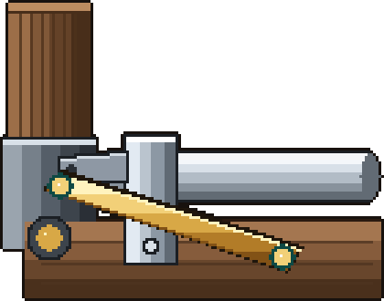
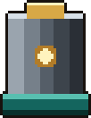
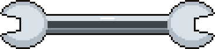
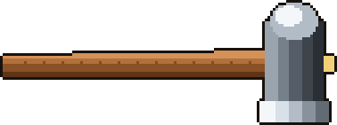

Orto Questões
TEOT 2024 · A Dobradiça
1/3
Lição 1 · olhe o lado antes de responder
Qual peça trava
a dobradiça?
Quem decorou “feixe anterior do colateral medial” cai na armadilha sem perceber: aqui o cotovelo está visto por fora — repare na ponta do olécrano atrás e no anel abraçando o rádio.

braçadeira giratória ↓
tirante entre as hastes ↑
Como caiu na prova · TEOT 2024
Na figura a seguir, o componente ligamentar mais importante para a estabilidade do cotovelo corresponde ao número

Escolha o seu número — a resposta sai no próximo story.
Orto Questões
O Tirante Lateral
2/3
Lição 2 · compare a prova com a figura original do livro
Três param no anel.
Só o 3 alcança a ulna.
Fonte: Campbell's Operative Orthopaedics, 15ª ed. (2026), Fig. 15.1B, p. 644
1
Colateral radial Armadilha
Nasce no epicôndilo lateral, mas termina no ligamento anular — não chega à ulna.
2
Ligamento anular A braçadeira
Prende-se na própria ulna para abraçar a cabeça do rádio; não liga o antebraço ao úmero.
4
Colateral acessório Auxiliar
Vai até a margem inferior do anular; fica tenso no varo, mas também não alcança a ulna.
3
Colateral ulnar lateral Gabarito C
Vai do epicôndilo lateral à crista do supinador da ulna. Único tirante lateral entre úmero e ulna: é ele que falha na instabilidade rotatória posterolateral.
Campbell's Operative Orthopaedics, 15ª ed., cap. 15, p. 643–644 · Rockwood, 10ª ed., cap. 40
Orto Questões
Por dentro × Por fora
3/3
Lição 3 · a regra que resolve os dois lados
Mude o lado,
muda o campeão.
Fonte das figuras: Campbell's Operative Orthopaedics, 15ª ed. (2026), cap. 15, Fig. 15.1, p. 644
Por dentro · Medial
Feixe anterior do LCM
Insere no tubérculo sublime da ulna.
Segura o valgo (desgaste crônico no arremessador).
Por fora · Lateral (Nº 3)
Colateral ulnar lateral
Insere na crista do supinador da ulna.
Segura o varo e a rotação posterolateral.
Círculo de Horii / O'Driscoll · queda com a mão espalmada
A luxação abre a dobradiça de fora para dentro: 1º colateral ulnar lateral → 2º cápsula → 3º colateral medial (por último).
Campbell's Operative Orthopaedics, 15ª ed., cap. 15, p. 643–644; cap. 52, p. 2229–2230


Treine grátis · o caminho está no perfil @ortoquestoes
ortoquestoes.com.br · Provas oficiais comentadas